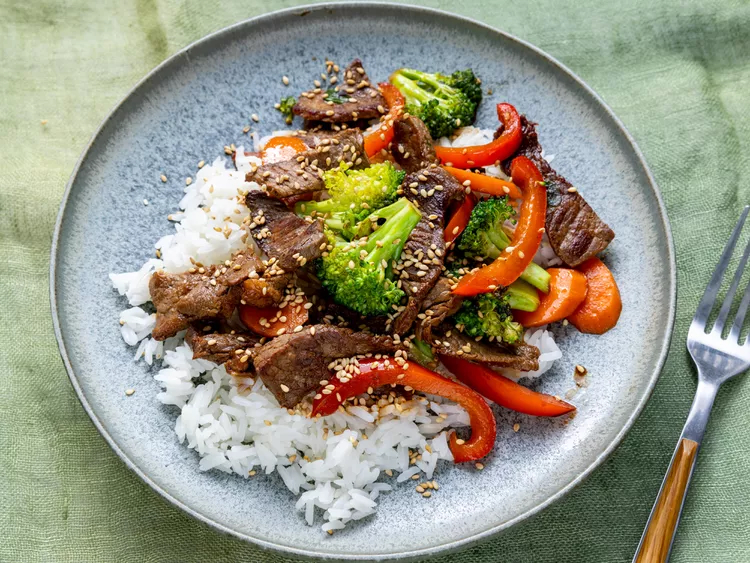

Quick Beef Stir-Fry

Need to use up some of your leftover vegetables and other
pantry staple ingredients? Look no further than a classic
beef stir-fry. This beef and broccoli stir-fry comes
together in just 25 minutes and only requires ingredients
that you probably already have. And if you don't? You can
just skip them!
Ingredients
- 2 tablespoons vegetable oil
- 1 pound beef sirloin, cut into 2-inch strips
- 1 1/2 cups fresh broccoli florets
- 1 red bell pepper, cut into matchsticks
- 2 carrots, thinly sliced
- 1 green onion, chopped
- 1 teaspoon minced garlic
- 2 tablespoons soy sauce
- 2 tablespoons sesame seeds, toasted
Steps
- Gather all ingredients.
- Heat vegetable oil in a large wok or skillet over
medium-high heat; cook and stir beef until
browned, 3 to 4 minutes.
- Move beef to the side of the wok and add broccoli,
bell pepper, carrots, green onion, and garlic to the
center of the wok. Cook and stir vegetables for
2 minutes.
- Stir beef into vegetables and season with soy sauce
and sesame seeds. Continue to cook and stir until
vegetables are tender, about 2 more minutes.
- Serve hot and enjoy!